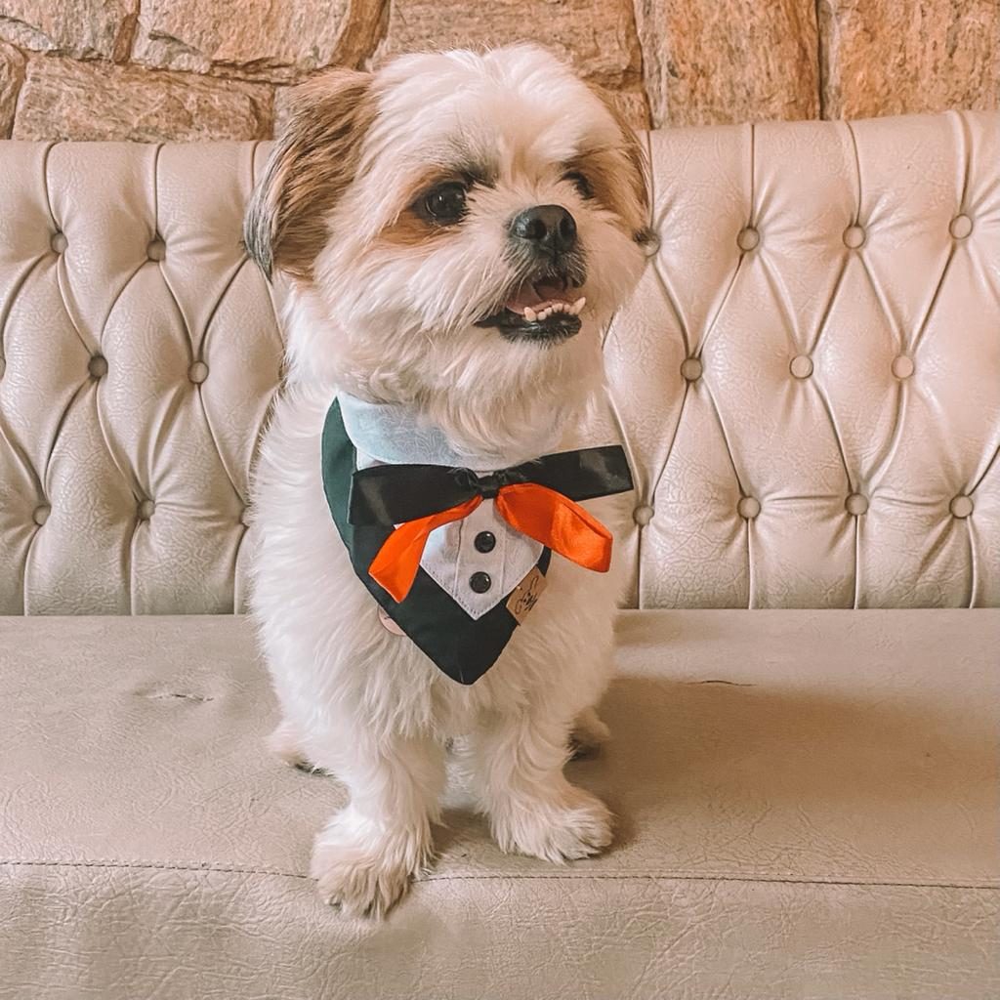
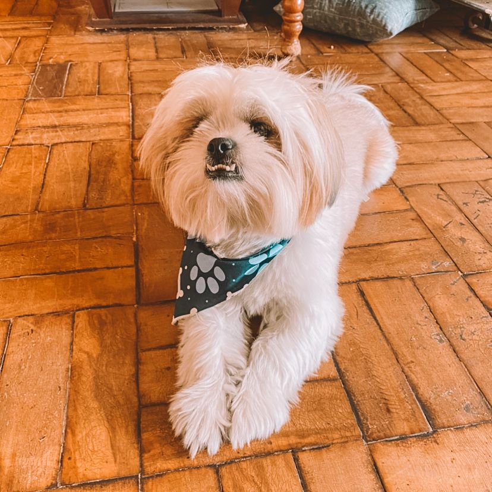
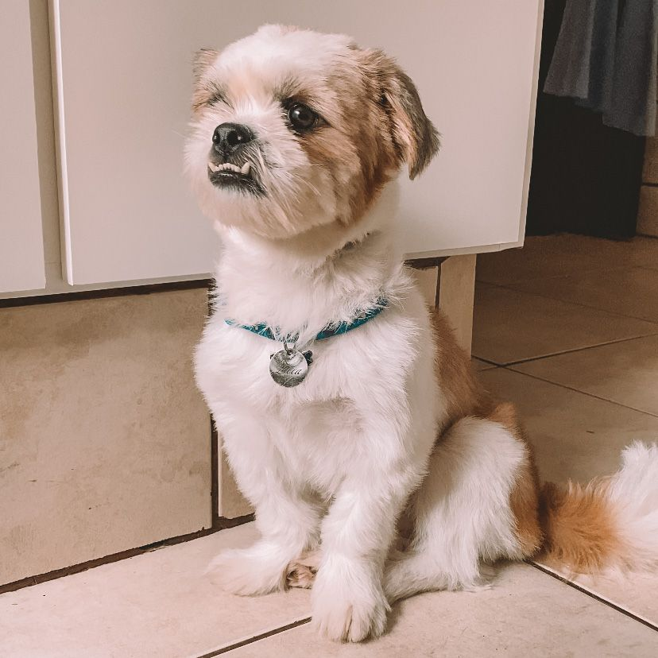

Mimar o Zeca
Quando tenho tempo livre, eu gosto de mimar e dedicar atenção ao meu cachorro, o Zeca. Ele é meu cãopanheiro e passamos nosso tempo sempre juntos.
Ele é muito fofoqueiro e adoro ficar na janela observando o movimento, ele gosta quando saímos para passear e quando eu brinco com ele e jogo os brinquedos para ele buscar. As vezes ele fica carente e gosta de ficar no colinho e dormir de conchinha.
← Voltar ao portfólio